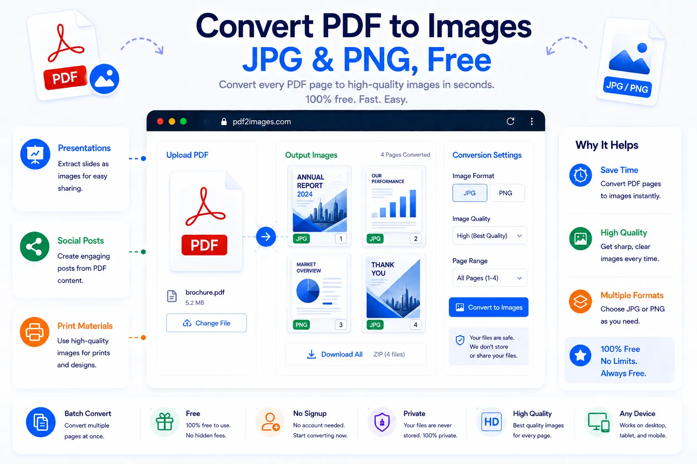

How to Convert PDF Pages to Images (JPG/PNG) Online

Sometimes a PDF isn't the format you actually need. Dropping a page into a slideshow, posting it on social media, embedding it in a website, or pasting it into a chat all call for an image, not a PDF file. Converting the pages to JPG or PNG turns each one into a standalone picture that can be used anywhere images are accepted, no PDF viewer required.
This guide covers when to use JPG versus PNG, what happens to multi-page files, and how to convert PDF pages to images for free using NexaTools.
What Converting a PDF to Images Actually Does
Each page of the PDF is rendered as its own separate image file, so a five-page PDF becomes five individual JPG or PNG files. The layout, text, and graphics on each page are captured exactly as they appear, just in an image format instead of a document format. That makes the output easy to drop into presentations, upload to platforms that don't accept PDFs, or resize and crop with any basic image editor.
Step-by-Step: Convert a PDF to Images with NexaTools
- Open the NexaTools PDF to Image converter
- Upload the PDF you want to convert
- Choose JPG or PNG as the output format
- Download the converted image files
Common Mistakes When Converting PDFs to Images
- Choosing JPG for text-heavy pages compression can slightly blur fine text edges, PNG holds up better for anything that needs to stay crisp
- Expecting one image for a multi-page PDF each page becomes its own file, not a single combined image
- Ignoring resolution needs an image meant for print needs a higher resolution than one destined for a quick social media post
- Forgetting transparency requirements only PNG supports transparent backgrounds, JPG always fills the background with a solid color
Who Needs to Convert PDF Pages to Images
- Designers and marketers pulling PDF content into slides or social posts
- Website owners embedding document pages as images instead of linked files
- Teams sharing document previews on platforms that don't support PDF uploads
- Anyone who needs to quickly crop, resize, or edit a page using an image editor
🖼️ Convert Your PDF to Images Free
No signup, no limits. Upload your PDF and get JPG or PNG files instantly.
⚡ Open PDF to Image Converter